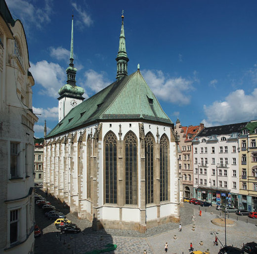
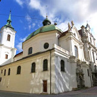
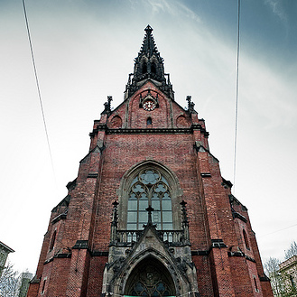
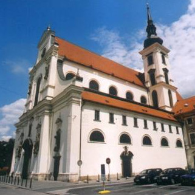

Po založení samotného Brna vznikla ve 13. století v dnešním historickém jádru Brna řada románských a románsko-gotických chrámů: minoritský kostel svatých Janů, dominikánský kostel svatého Michala, kostel svatého Mikuláše na náměstí Svobody, kostel svatého Jakuba, kostel Nanebevzetí Panny Marie. Tyto chrámy byly v pozdějších století výrazně přestavovány či nahrazovány novostavbami, takže se do dnešních dnů jejich původní podoba nezachovala. Z této doby rovněž pochází kostely v okolních vesnicích, které byly připojeny k Brnu ve 20. století.
První písemné zmínky o těchto chrámech jsou často pozdějšího data, nicméně dle stavebně-historických analýz jsou v jádru románské (kostel svatého Václava v Obřanech, původní kostel Panny Marie v Tuřanech, kostel svatého Jiljí v Líšni, aj.). V průběhu 14. století došlo kromě gotických přestaveb již existujících chrámů ke stavbě čtyř velkých gotických kostelů: svatého Petra a Pavla na Petrově, jenž je v obvodovém zdivu zachován dodnes, cihlového chrámu Nanebevzetí Panny Marie u nově založeného kláštera cisterciaček na Starém Brně, k výstavbě kláštera augustiniánů s kostelem Zvěstování Panny Marie a svatého Tomáše apoštola před hradbami města a k založení kartuziánského kláštera s kostelem Nejsvětější Trojice v Králově Poli. Během 14. a 15. století byl zcela nově, v téměř současné podobě, vystavěn kostel svatého Jakuba.
Kostel svatého Jakuba Staršího (Většího) je pozdně gotický trojlodní halový kostel nacházející se na Jakubském náměstí v brněnské čtvrti Brno-střed, jehož historie sahá až do počátku 13. století. Jedná se o významně dochovanou památku městské církevní architektury na českém území. Je zde pochován slavný obránce města proti švédskému obléhání, maršál Louis Raduit de Souches. Národní kulturní památka od roku 1995. Jde o farní kostel farnosti Brno - sv. Jakub.
Z archeologických nálezů vyplývá, že někdy na konci 13. až začátku 14. století byl románský kostel nahrazen vrcholně gotickou stavbou o přibližně stejných rozměrech, jako je kostel stávající. Ta byla ale téměř beze zbytku odstraněna a nahrazena stavbou současnou. V této době je také doložena fundace množství oltářů, např. sv. Víta (1413), sv. Filipa a Jakuba (1423), sv. Kříže (1429), nebo sv. Anny (1446).
Na delší straně je ke kostelu připojena kaple a sakristie. Kaple má plamínkový dekor nad kterým se nachází atypicky kruhové okno, zatímco sakristie je větší a s více ornamentálním zdobením na fasádě. Průčelí sakristie je ohraničeno fiálami, které jsou zakončeny křížovou kytkou. Dalším výrazným prvkem průčelí, je velký vimperk s kraby a křížovou kyticí na samém vrcholu. Tam, kam nezasahuje vimperk, je sakristie lemována atikou.
 Kostel svatého Jana Křtitele a Jana Evangelisty, běžně zvaný jako kostel svatých Janů, je římskokatolický chrám postavený ve 13. století při minoritském klášteře v historickém centru Brna. Areál kláštera s kostelem a loretánskou kaplí je od roku 1958 zapsán v seznamu kulturních památek České republiky.
Minoritský řád přišel do Brna někdy mezi lety 1227 a 1239. Společně se vznikem klášterního provizoria byl postaven i provizorní kostelík svatého Jana Křtitele, jehož pozůstatky byly údajně nalezeny při stavebních pracích v roce 1722. V polovině 13. století vznikl definitivní chrám, který byl roku 1257 vysvěcen olomouckým biskupem Brunem ze Schauenburku. O pět let později byl celý areál kláštera postižen požárem. Donátorem obnovy stavby se stal Mikuláš Opavský, jenž také společně s chotí Anežkou našel v kostele místo posledního odpočinku. Původně se měl stát rodovým pohřebištěm opavských Přemyslovců.
Českobratrský evangelický chrám Jana Amose Komenského, lidově zvaný Červený kostel, se nachází na brněnském Komenského náměstí v městské části Brno-střed na severním okraji katastrálního území Město Brno. Byl postaven ve stylu severoněmecké gotiky v roce 1867. Kostel z červených režných cihel je dlouhý 45 m, jeho věž má výšku 50 m. V souladu s protestantskou tradicí je jeho interiér strohý a jednoduchý. Jednou z mála ozdob jsou sochařské práce od Franze Schönthalera.
V lednu 2011 student Masarykovy univerzity zazdil USB flash disk do zdi Červeného kostela. Náhodný kolemjdoucí na ni mohl nahrát libovolná data. Jednalo se o první zapojení do streetartového projektu Dead drops v České republice. Flash disk byl ale po krátké době odstraněn.
Kostel svatého Tomáše apoštola, původně kostel Zvěstování Panny Marie a svatého Tomáše apoštola, je barokní farní kostel, původně gotický klášterní kostel augustiniánů. Nachází se v brněnské městské části Brno-střed na jihu Moravského náměstí v katastrálním území Město Brno. Počátky chrámu sahají do 14. století, kdy jej Jan Jindřich založil společně s augustiniánským klášterem. Samotný kostel byl v průběhu staletí mnohokrát opravován a přestavován, jeho současná barokní podoba pochází ze 17. století. Jde o farní kostel farnosti Brno u kostela sv. Tomáše.
V průběhu let 1732–1752 byl zásadně přestavěn starý konvent a prelatura, na jejichž vybudování se podíleli Mořic Grimm a jeho syn František Antonín. Portál prelatury je osazen sochami markraběte Jana Jindřicha a jeho syna Jošta jako římského krále od Josefa Leonarda Webera. Mořic Grimm zároveň v letech 1749–1752 barokizoval presbytář kostela.